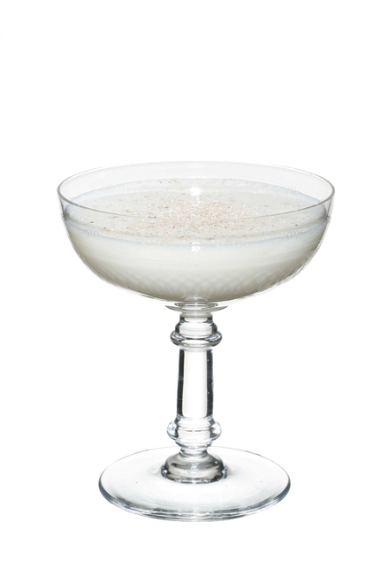

Embark on a whimsical journey for your taste buds with our latest creation—the Smecta Flip cocktail. This delightful concoction is a playful twist on the classic flip, offering a velvety fusion of flavors that is both comforting and surprising. Crafted with a base of premium bourbon or rye whiskey, the Smecta Flip adds a luscious touch with the inclusion of chocolate liqueur and a hint of hazelnut syrup. But the real magic lies in the unexpected element—an infusion of an effervescent, fruity effervescence that elevates the drink to new heights. Served in a chilled coupe glass and garnished with a sprinkle of cocoa, the Smecta Flip is a symphony of textures and tastes, inviting you to savor each sip. Experience the joyous flip side of mixology with this whimsical creation—where sophistication meets surprise. Cheers to the unexpected and the delightfully delicious!
The most important cocktail after a rave party
Et voilà !
